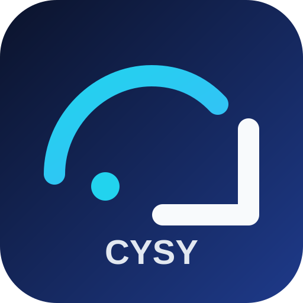

Publicação segura
CYSY Expedição e Carregamento
Esta entrada usa a versão pública limpa da aplicação para contornar cache antigo do host e reduzir a superfície do primeiro carregamento.
Preparando versão pública atual do aplicativo...
URL recomendada de acesso imediato: .../Sistema%20do%20Carregamento/launch.html?v=20260409r02